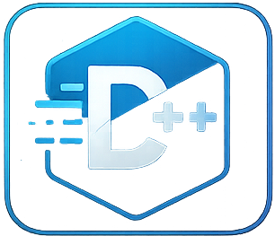

Stack
Interactive stack demo with size, capacity and complexity explanation.
C++ Utility & Learning Library

A personal C++ project that combines implementations, documentation, tests, debug tools, and interactive visualizations.
Current focus: building a clean template for Stack, Queue, BFS, DFS, Debug, and future modules.
Interactive stack demo with size, capacity and complexity explanation.
Planned queue demo with enqueue/dequeue and front/rear explanation.
Planned graph traversal visualizer with queue, visited set and order.
Planned DFS traversal demo with branching flow and depth-first behavior.
Colored console helpers, cleaner outputs and structured debug messages.